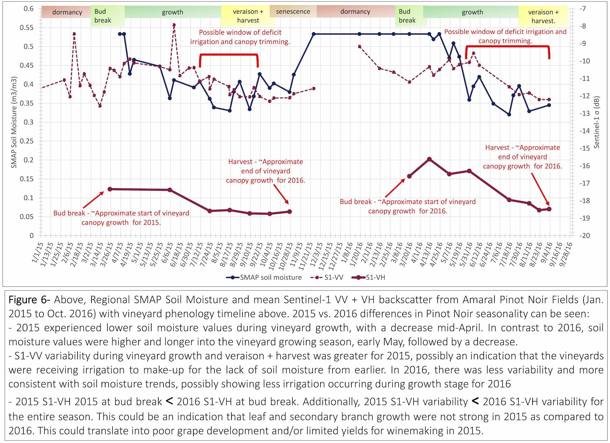

Congratulations to Crossroads student Aaron Davitt on winning first place for the Division of Science at the CUNY Graduate Student Symposium!
Aaron is currently working on his PhD in Earth and Environmental Science at the CUNY Graduate Center, and also is a member of Crossroads faculty Kyle McDonald's Ecosystem Science Laboratory.
His poster presentation at the Symposium was entitled "The monitoring of vineyards through the use of remote sensing and a radiative transfer model", with co-authors Kyle McDonald, Nick Steiner, Vanessa Escobar, and Peggy O'Neill.
The goal of this research was to examine the ability to monitor vineyards in Sonoma County, California with the most recent advances in remote sensing.
Vineyards are sensitive to their local climate, where each variety of wine incorporates the local environment into the flavor, or terroir. Thus, what is needed is a cost-effective way to characterize and monitor conditions within and across vineyard variability that identifies key features, such as soil moisture and grapevine health.
Davitt and co-authors combined remote sensing data from the Soil Moisture Active Passive (SMAP) and Sentinel-1 imaging radar satellites to identify vineyard and phenology changes in Sonoma County, California, that occurred in 2015 and 2016.
Their work will help vineyard managers to have the data to better respond to seasonal and environmental changes, including for use of irrigation and canopy management to maximize grape yield and quality.